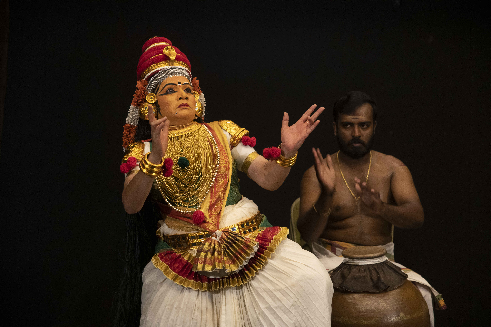
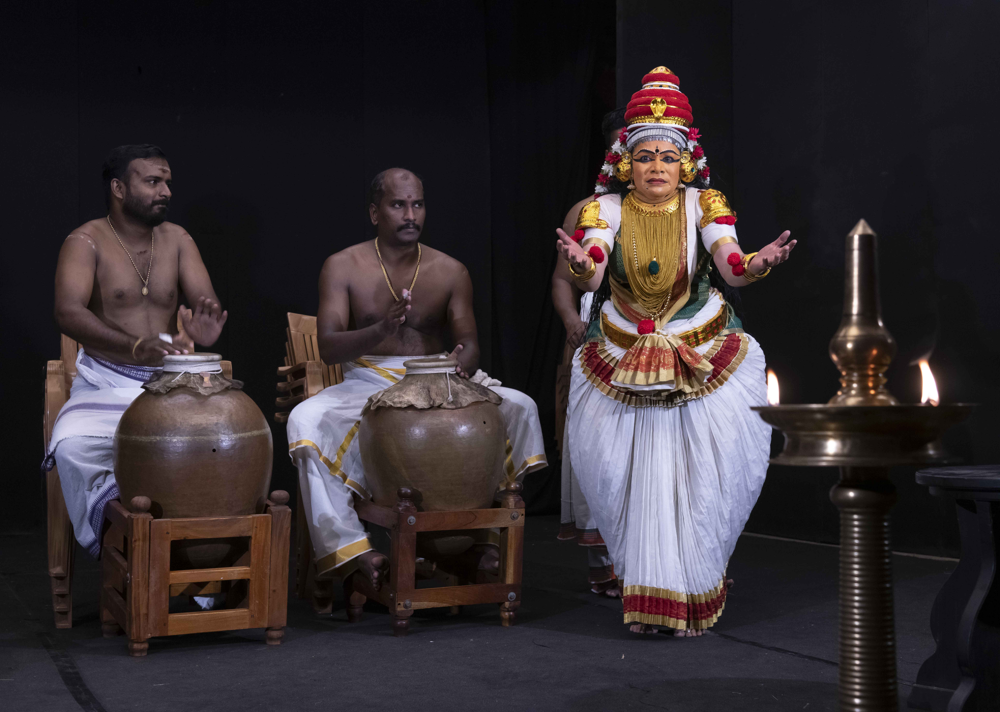
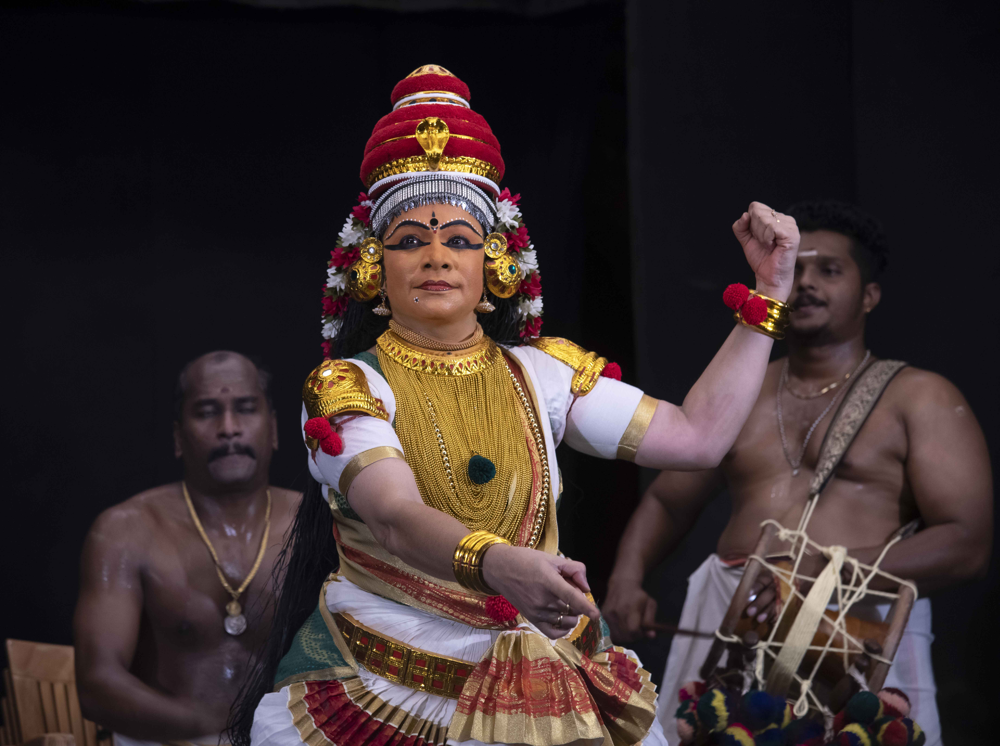

Sacred Moments
Glimpses from the journey of devotion





Guardian of Sacred Theatre
Born into the sacred world of classical Indian performing arts, Kalamandalam Sindhu embodies the timeless tradition of Kerala's temple theatre. Her journey began at the prestigious Kerala Kalamandalam, where she immersed herself in the rigorous discipline of classical dance and drama.
Under the tutelage of legendary masters, she absorbed not just the techniques of movement and expression, but the spiritual essence that transforms performance into prayer. Her gurus instilled in her the understanding that every gesture carries the weight of centuries, every expression holds the power of devotion.
For over three decades, Kalamandalam Sindhu has graced stages across the world, from the ancient temple courtyards of Kerala to the grand theaters of international festivals. Her performances transcend mere entertainment, creating a bridge between the earthly and the divine.
As a torchbearer of tradition, she has dedicated her life to preserving the rare female performance roles that were once in danger of being forgotten. Her teaching methodology combines traditional guru-shishya parampara with contemporary pedagogical approaches, ensuring that the ancient wisdom remains accessible to modern students.
Honors that reflect a lifetime of dedication
1994-95
From Kerala Kalamandalam for excellence in classical arts education
2007
From Kerala Kalamandalam for outstanding contributions to traditional arts
2010
Recognition for excellence in classical music and dance performance
2016
Thrissur - Honoring dedication to classical arts preservation
2017
Kochi - Recognition for spiritual and cultural contributions
2019
State recognition for excellence in performing arts
2021
From State Government of Kerala for temple arts preservation
2022
Recognition for expertise in UNESCO-recognized Sanskrit theatre
2022
From Kerala Kalamandalam Deemed University for classical excellence
2016-18
Ministry of Culture, Government of India - Supporting advanced research in classical arts
2017
Selected for empanelment to represent Indian culture internationally
A journey through stages, temples, and countries
Enacted the complete Nangiarkoothu comprising 217 Sanskrit verses — a rare and extraordinary feat in temple theatre.
Returned to Russia with a 6-member troupe, continuing global heritage outreach on behalf of India and Kerala.
Featured in a prestigious event by the Central Sangeet Natak Akademi, reaffirming her place on the national stage.
Participated in Central Sangeet Natak Akademi & Margi's cultural presentation, performing a hybrid artistic piece.
Played the lead female role in this contemporary theatre piece produced by Nireeksha, merging tradition and modernity.
Led an 8-member troupe to present Kutiyattam & Nangiarkoothu for the first time in Russia under a UNESCO invitation.
Invited by Hindu Endowment Board to present two temple performances across sacred venues in Singapore.
A decade-long contribution through performance and mentorship at one of Kerala's premier cultural institutions.
Performed Kettinjazhal (hanging by rope) after 40 years; later played the lead role Malayavathi in Delhi for NSD.
Represented India in an international tour with Kerala Kalamandalam, sharing sacred theatre with European audiences.
Performed nearly all classical female roles in Kutiyattam and Nangiarkoothu — keeping temple narratives alive through embodiment.
Two decades of nurturing classical arts
Taught Kutiyattam and Nangiarkoothu as Tutor, nurturing the first generation of students in the sacred arts of Sanskrit theatre.
Sacred theatre training in village gurukulam tradition, where the ancient guru-shishya parampara flourished in its purest form.
Focused on mentoring advanced Kutiyattam students, guiding them through the intricate nuances of this UNESCO-recognized art form.
A decade of performing and teaching in Kerala's cultural capital, where tradition meets innovation.
Guiding new generations of performers at the state's premier arts institution, where the circle of learning continues.
In an age where ancient traditions face the challenge of modernity, Kutiyāttakkālam stands as a beacon of cultural preservation and spiritual awakening.
Breaking down barriers that separate classical arts from contemporary learners, creating pathways for everyone to experience this sacred tradition.
Maintaining the sacred connection between performance and prayer that defines temple theatre, honoring the spiritual essence of each movement.
Training dedicated artists who will carry forward this ancient wisdom with reverence and innovation, ensuring the flame of tradition burns bright.
Every movement is a mantra. Every performance is a prayer.
— Kalamandalam Sindhu
Glimpses from the journey of devotion
"Dance is devotion shaped by knowledge"